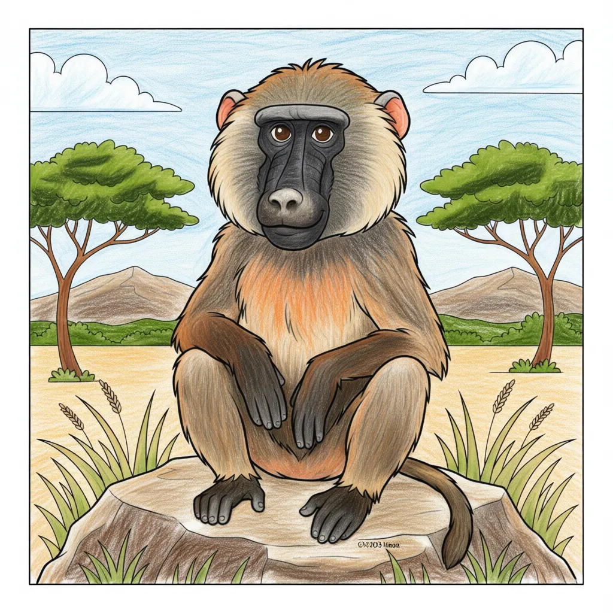

Baboon
Papio spp

Key Characteristics
- Baboons are one of the world's largest monkeys, easily recognized by their long, dog-like snout.
- They are very social and live in large groups called 'troops,' sometimes with hundreds of members!
- Baboons are smart and very good problem solvers, using teamwork to find food and stay safe.
Peculiar Facts (Fun Facts!)
- They can sleep high up in trees or on steep cliffs to stay safe from predators like leopards.
- Baboons use over 30 different vocalizations, from soft grunts to loud alarm calls.
- In some areas, Baboons have learned to open car doors and raid camping sites for food, showing off their intelligence!